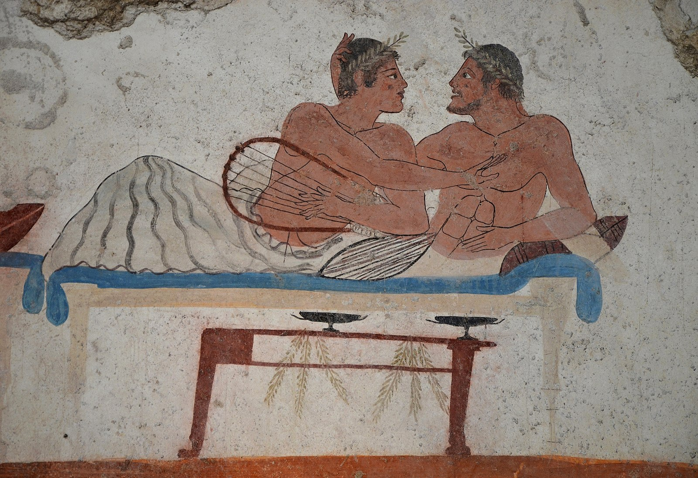
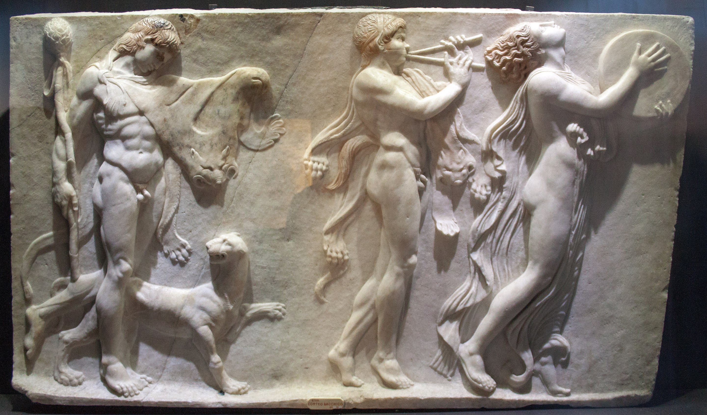

Cultures of escape¶
Counterculture and Escapism¶
When people experience their material living conditions as outside their nexus of control, they start to seek other groups and cultures which promise to better fulfil their needs. The function of escapism is a compensation for exposure to other irrational patterns of belief formation, particular in so far as those belief systems would lead to dispair. They attempt to avoid awareness of the aversive beliefs the technology dystopia engenders.
Βάκχος Dance¶
The ancient greeks used strings, pipes and song to make music together in symposiums - translated as ‘drinking together’. In this patriarchal culture, a female slave might be asked to play a song about love on her Aulos for a gathering of men. Participants would give improvisational performances as the party developed.
“Let us hang garlands of celery across our foreheads and call a festival to Dionysus”
Also known as Bacchus (Βάκχος), Dionysus was the god of the grape-harvest, winemaking, orchards and fruit, fertility, insanity, ritual madness, religious ecstasy and festivity in ancient Greek religion and myth. As Eleutherios (“the liberator”), his wine, music, and ecstatic dance left his followers free from self-conscious fear and the oppressive restraints of the powerful.
Nietzsche describes ancient greek musical rituals that he believed transcended the pessimism and nihilism of a fundamentally meaningless world. The Greek spectators, by looking into the abyss of human suffering and affirming it, passionately and joyously affirmed the meaning of their own existence. They knew themselves to be infinitely more than petty individuals, finding self-affirmation not in another life, not in a world to come, but in the terror and ecstasy alike celebrated in the performance of tragedies.
New York Disco scene in early 70s¶
Mancuso always seemed rather more a product of the summer of love and hippiedom than the burgeoning club culture of post-Stonewall New York. Before the Loft, he was a regular at psychedelic venues the Electric Circus and Fillmore East.
“listening to birds, lying next to a spring and listening to water go across the rocks … there were times when it would be intense, and times when it would be very soft”
Mancuso manipulated music to create an atmosphere and tell a story; taking the crowd on a journey. He required that the music played had to be soulful, rhythmic, and impart words of hope, redemption, or pride.
He said:
“I don’t like to go in situations that are overcrowded; where you can’t dance or where the sound system is so overpowering that your ears are ringing or where beer costs $7 a bottle – this is what I am rebelling against.”
As a child in Jamaica, Grace Jones had only one schoolfriend and was teased by classmates for her “skinny frame”. Moving to the US at 13 she “absolutely hated” her mother’s new husband, he regularly beat her in what Jones described as “serious abuse”. As a young woman she immersed herself in the Counterculture of the 1960s by living in hippie communes, earning money as a go-go dancer, and using LSD and other drugs. She later praised the use of LSD as “a very important part of my emotional growth… The mental exercise was good for me”.
“Ultimately, it required a certain amount of clear thinking, a lot of hard work and good make-up to be accepted as a freak.”
UK Rave scene in the late 80s/early 90s¶
“Rave culture just walked away from power, which scared them” Phil Harnell
Chernobyl
Shelling of Russian parliament
Hubble space telescope
Dolly the sheep
Availability of drugs - looking culturally that seems to be where the openness came from in the rave cultural explosion. Danger to breweries!
Confluence of free parties and promoters making money
New age travellers
Yuppies
Football hooligans
It was then suppressed and made less danger of an epidemic.
Technology part of the drivers, backdrop.